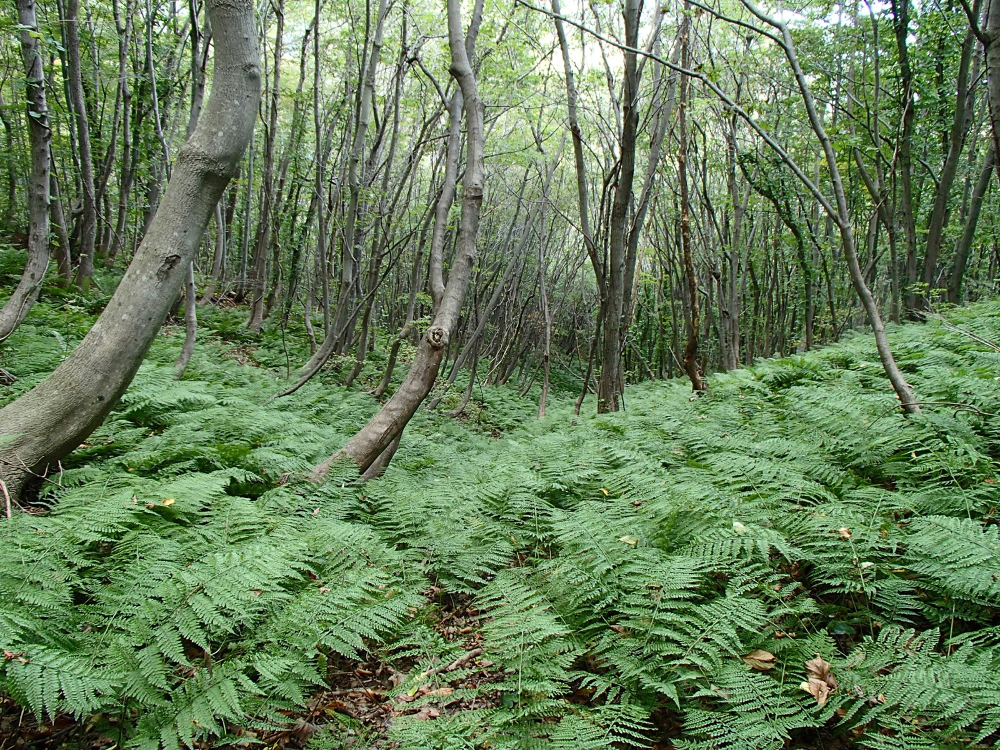
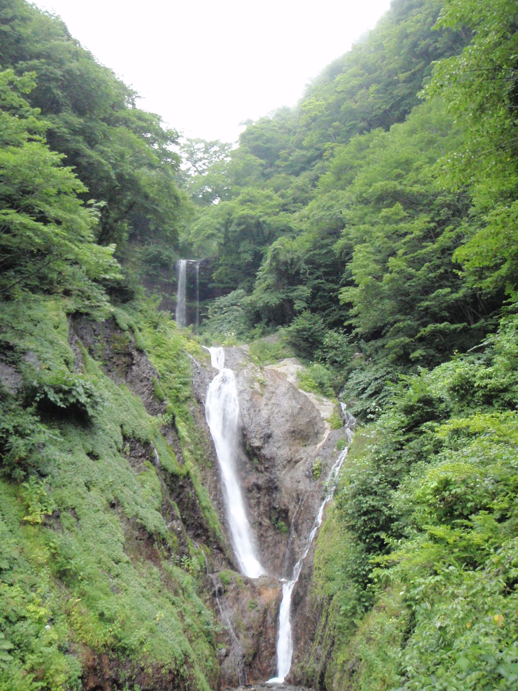
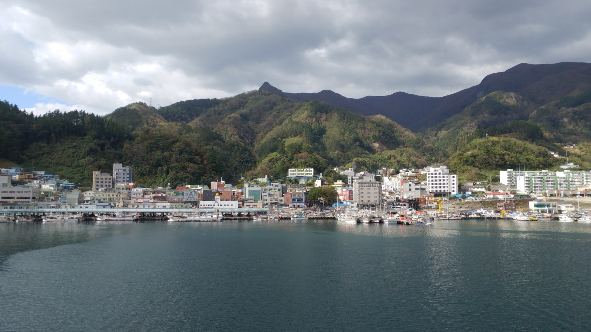

동해의 화산섬 · ULLEUNGDO
신비의 섬,
울릉도로 떠나요
깎아지른 해안 절벽, 태고의 원시림, 그리고 자연이 차린 밥상. 육지에서 배로 만나는 특별한 하루.
984m성인봉 정상
3~4h포항 → 울릉 배편
44km²섬 면적
깎아지른 해안 절벽, 태고의 원시림, 그리고 자연이 차린 밥상. 육지에서 배로 만나는 특별한 하루.
화산섬이 빚어낸 웅장한 절경과 태고의 자연. 어디에서도 볼 수 없는 울릉도만의 장면들을 만나보세요.

깎아지른 절벽 사이로 이어지는 바닷길, 파도 소리와 함께 걷는 산책로.

천연기념물로 지정된 원시림 사이를 오르는 대표 트레킹 코스.

울릉도 유일의 평지, 사방이 산으로 둘러싸인 초록빛 분지 마을.

울릉도의 관문이자 여행의 시작. 항구를 따라 이어지는 골목.

3단으로 떨어지는 시원한 폭포. 숲길을 따라 오르는 산책 코스.

새벽 오징어잡이 배가 드나드는 활기찬 어항과 일출 명소.
모노레일로 오르는 언덕에서 만나는 탁 트인 해안 절경.

동해의 싱싱한 해산물과 울릉도 자생 산나물이 만나, 여기서만 맛볼 수 있는 특별한 한 끼를 선사합니다.
성인봉 원시림을 오르는 왕복 3~4시간 코스. 초보자도 도전 가능합니다.
배 위에서 만나는 해안 절벽과 기암괴석. 울릉도의 진면목을 바다에서.
초록빛 평원을 걷는 여유로운 산책과 지역 먹거리 체험.

포항·강릉·묵호에서 여객선을 타고 울릉도로 올 수 있습니다. 날씨에 따라 운항이 변동될 수 있어요.
※ 배편 시간·요금·운항 여부는 기상에 따라 달라집니다. 방문 전 선사에 반드시 확인하세요.